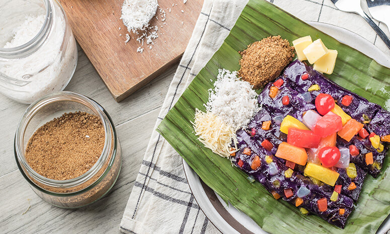

Puto Bumbong

Here`s an easy recipe for everyone’s favorite holiday staple!
Preparation Time: 15 mins.
Cooking Time: 10 mins.
Total Time: 25 mins.
Ingredients
- 1 1/2 cups glutinous rice flour
- 3/4 cup rice flour
- 6 Tbsp coconut
- 1 cup water
- 1 Tbsp ube flavor
- 1 can DEL MONTE Fiesta Fruit Cocktail (432g), drained, medium dice
- 6 leaves banana leaf, heated to soften (8 x 11-inches or short bond paper)
- 1/2 cup butter
- 1/2 cup sugar, muscovado
- 1/2 cup queso de bola
- 1 can DEL MONTE Fiesta Fruit Cocktail (432g), drained
- 1/2 cup coconut, grated
Instructions
- Combine first three ingredients. Add water and flavoring + coloring.
- Fold in the DEL MONTE Fiesta Fruit Cocktail.
- Divide the dough into two. Flatten the first one into a rectangle and slice it into strips (approx. 12 pieces) repeat with the other half.
- Place 4 logs in a banana leaf, brush each with butter. Fold the leaf to secure the logs.
- Repeat this process until you finish all the logs.
- Steam everything together in a steamer, until the leaf has turned a darker color.
- Serve hot, brush with butter, serve with muscovado sugar, queso de bola, more DEL MONTE Fiesta Fruit Cocktail, and fresh grated coconut.